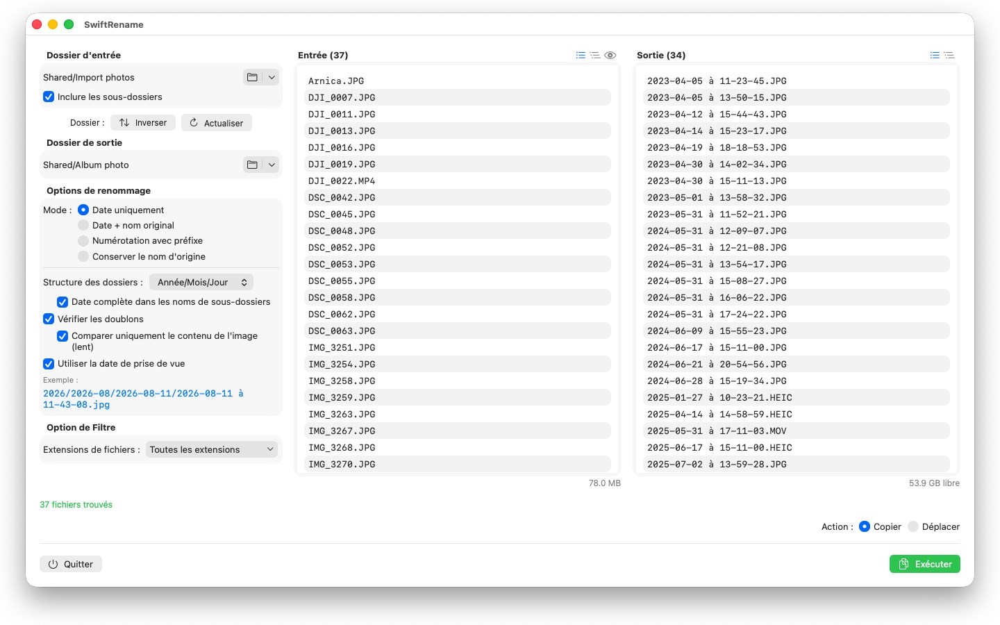
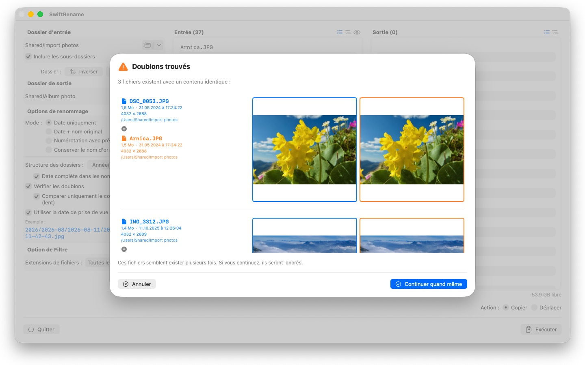

Renommez des centaines de photos et fichiers d’un coup — par date de prise de vue, numérotés ou triés par année et par mois. Les doublons sont détectés automatiquement.



SwiftRename est un outil puissant pour renommer, copier et déplacer des fichiers par lots sur votre Mac. Choisissez un dossier, définissez l’apparence des nouveaux noms, vérifiez l’aperçu en direct — et lancez l’opération.
24 langues : Deutsch · English · Español · Français · Italiano · Nederlands · Português · Svenska · Norsk · Suomi · Polski · Čeština · Hrvatski · Magyar · Română · Türkçe · Русский · Українська · فارسی · ไทย · 日本語 · 한국어 · 简体中文 · 繁體中文
MODES DE RENOMMAGE
- Date uniquement : nommez les fichiers d’après leur date (p. ex. 2024-01-15 à 14-30-00)
- Date + nom original : ajoutez la date devant le nom d’origine
- Numérotation avec préfixe : numérotation séquentielle avec votre propre préfixe (p. ex. Voyage_0001)
- Conserver le nom d’origine : laissez les noms intacts et classez simplement les fichiers dans des dossiers
STRUCTURE DE DOSSIERS
Classez automatiquement vos fichiers dans des dossiers par année, mois ou jour — avec, si vous préférez, la date complète dans les noms de sous-dossiers (p. ex. 2026/2026-02/2026-02-20). Les fichiers répartis sur plusieurs décennies reçoivent en plus des dossiers de décennie. Ou choisissez « Conserver » pour reproduire la hiérarchie des sous-dossiers du dossier source dans la destination.
DATE DE PRISE DE VUE
Les photos et vidéos sont nommées d’après le moment où elles ont réellement été prises : SwiftRename lit la date de prise de vue (EXIF) — depuis les formats RAW de tous les grands fabricants d’appareils photo (Canon, Nikon, Sony, Fujifilm et bien d’autres) ainsi que HEIC, JPEG, PNG, TIFF et les formats vidéo courants. Si un fichier n’a pas de date de prise de vue, sa date de création est utilisée à la place.
DÉTECTION DES DOUBLONS
Les doublons sont détectés par taille et contenu de fichier — indépendamment de la date de création : la même photo avec un horodatage différent ne peut donc pas passer entre les mailles du filet. Une comparaison d’images optionnelle repère même les photos réenregistrées par d’autres apps. Des aperçus en miniature vous permettent de comparer les deux fichiers côte à côte ; les doublons sont ignorés automatiquement.
AUTRES FONCTIONNALITÉS
- Copiez ou déplacez en un clic — y compris le renommage sur place dans le même dossier
- Accès rapide aux dossiers source et destination récemment utilisés
- Incluez les sous-dossiers ; affichez les listes de fichiers à plat ou en arborescence
- Filtrez les extensions de fichiers avec sélection multiple
- Aperçu en direct des nouveaux noms avant toute modification
- Annulation et rétablissement d’opérations entières (Cmd+Z)
- Affichage de la progression avec nom de fichier et pourcentage — annulez à tout moment
- L’espace disque disponible est vérifié avant le démarrage de l’opération
- Glissez-déposez des dossiers directement depuis le Finder
Tout reste sur votre Mac. Aucune connexion réseau, aucun compte, aucune collecte de données.
- Nécessite macOS 12 ou version ultérieure
- 24 langues
- Assistance : SwiftAppsBavaria@gmx.net
Autres apps
sCollect
Organiser musique, films, livres audio, livres numériques et autres collections dans une médiathèque.
sCollectPlay
Le lecteur de la médiathèque : lire musique, films, livres audio et podcasts simplement depuis un dossier, un fichier XML iTunes ou une médiathèque sCollect, sans rien modifier aux tags des fichiers.
sName2Date
Écrire la date du nom de fichier comme date de prise de vue dans les photos, films et enregistrements audio, pour qu'un fichier comme IMG_20240115_103000.jpg se classe correctement dans n'importe quel gestionnaire de photos.
sName2Date Lite
L'édition pour un fichier par passage : écrire la date du nom de fichier comme date de prise de vue dans une photo, un film ou un enregistrement audio, la définir à la main, mettre le nom en notation ISO et tout annuler avec ⌘Z — les mêmes fonctions que sName2Date, mais sans dossiers entiers.
sVectorLift
Ouvrir, visualiser et enregistrer en SVG d'anciens cliparts vectoriels : CorelDRAW, Windows Metafile et CGM.
sCollectPlay Lite
L'édition allégée de sCollectPlay : ouvrir simplement un dossier, un fichier XML iTunes ou une médiathèque sCollect et y lire musique, films, livres audio et podcasts, avec listes de lecture, pistes audio et de sous-titres, ralenti et avance image par image. Une source par session ; le navigateur en colonnes, les listes de lecture personnelles et les sources récemment utilisées sont réservés à la version complète.
sBikeBridge
Analyser ses sorties à vélo sans les téléverser sur un portail : importer les fichiers FIT de tout compteur vélo qui enregistre dans ce format, ainsi que GPX et TCX. Les sorties sont conservées dans une bibliothèque propre sur le Mac, avec carte, puissance et fréquence cardiaque, photos et notes ; l'import détecte les doublons. Des indicateurs par année ou par mois et des filtres par distance, dénivelé et durée rendent les sorties comparables. Sur demande, la carte est aussi disponible hors ligne.